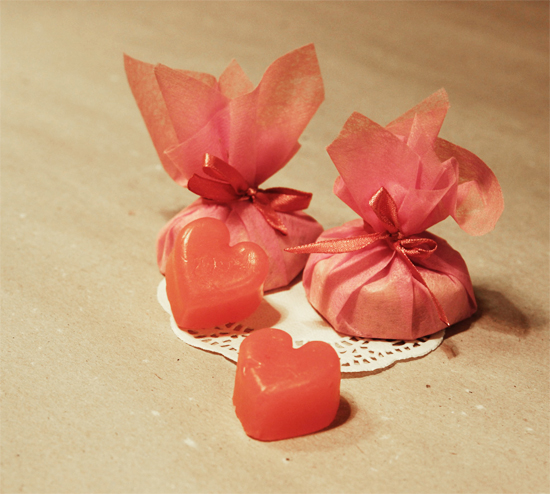

Retro Photos
We have also taken care with the 2.0.0 design to make it compatible with 1.9. It will be easier to migrate from 1.9 to 2.0 than it was from 1.8 to 1.9. (The notable incompatibilities are described later.) In fact, thanks to the dedicated work of third parties, some popular applications such as Rails and tDiary have been reported to work on the release candidate version of 2.0.0. In fact, thanks to the dedicated work of third parties, some popular applications such as Rails and tDiary have been reported to work on the release candidate version of 2.0.0. We have also taken care with the 2.0.0 design to make it compatible with 1.9. It will be easier to migrate from 1.9 to 2.0 than it was from 1.8 to 1.9. (The notable incompatibilities are described later.) In fact, thanks to the dedicated work of third parties, some popular applications such as Rails and tDiary have been reported to work on the release candidate version of 2.0.0. In fact, thanks to the dedicated work of third parties, some popular applications such as Rails and tDiary have been reported to work on the release candidate version of 2.0.0.
Comments 17 | Continue Reading
We have also taken care with the 2.0.0 design to make it compatible with 1.9. It will be easier to migrate from 1.9 to 2.0 than it was from 1.8 to 1.9. (The notable incompatibilities are described later.) In fact, thanks to the dedicated work of third parties, some popular applications such as Rails and tDiary have been reported to work on the release candidate version of 2.0.0. In fact, thanks to the dedicated work of third parties, some popular applications such as Rails and tDiary have been reported to work on the release candidate version of 2.0.0. We have also taken care with the 2.0.0 design to make it compatible with 1.9. It will be easier to migrate from 1.9 to 2.0 than it was from 1.8 to 1.9. (The notable incompatibilities are described later.) In fact, thanks to the dedicated work of third parties, some popular applications such as Rails and tDiary have been reported to work on the release candidate version of 2.0.0. In fact, thanks to the dedicated work of third parties, some popular applications such as Rails and tDiary have been reported to work on the release candidate version of 2.0.0. We have also taken care with the 2.0.0 design to make it compatible with 1.9. It will be easier to migrate from 1.9 to 2.0 than it was from 1.8 to 1.9. (The notable incompatibilities are described later.) In fact, thanks to the dedicated work of third parties, some popular applications such as Rails and tDiary have been reported to work on the release candidate version of 2.0.0. In fact, thanks to the dedicated work of third parties, some popular applications such as Rails and tDiary have been reported to work on the release candidate version of 2.0.0.
Comments 17 | Continue Reading